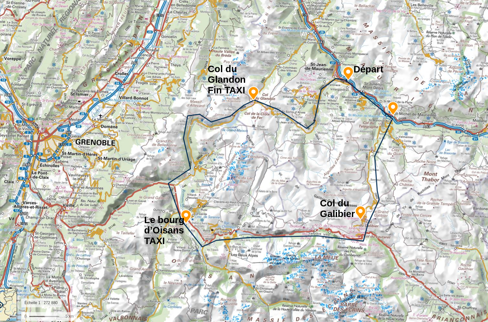
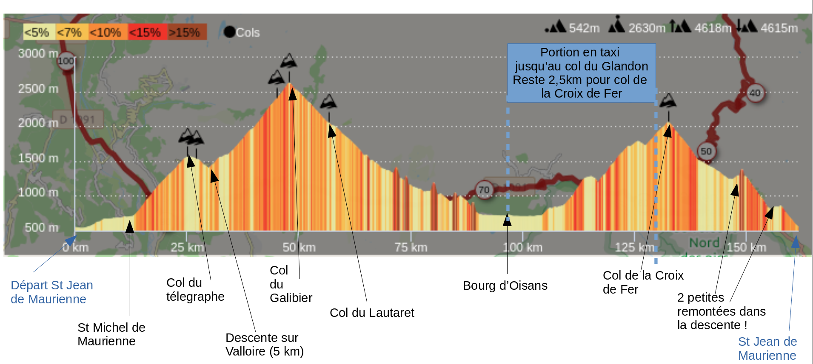
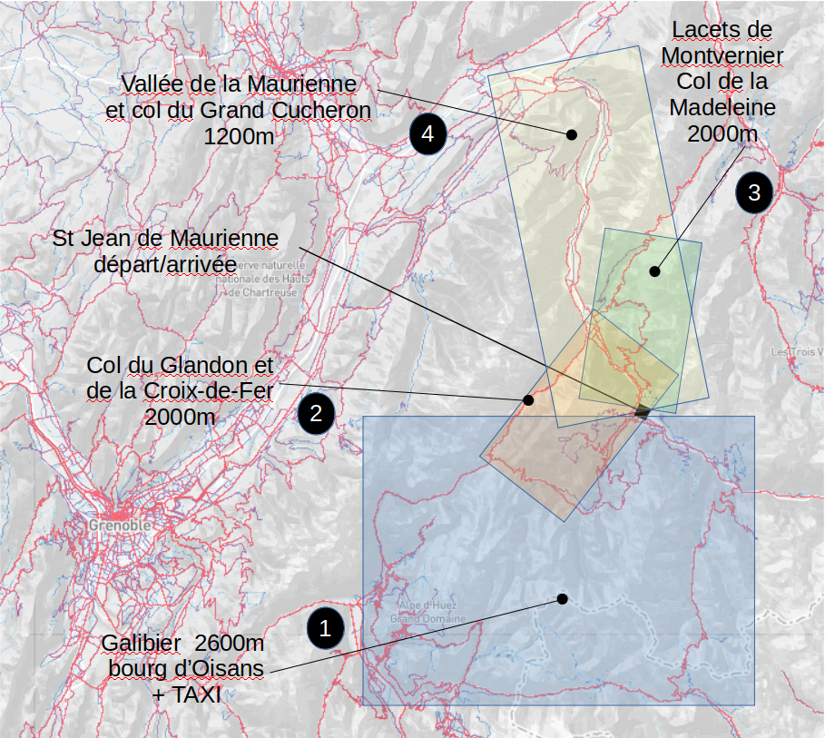

Col du Galibier
Temps prévisionnels
| Etape | Segment | Distance (km) | Distance cumulée | Dénivelé | Dénivelé cumulé | Vitesse approx | Temps | Total (avec pause) | Heure |
|---|---|---|---|---|---|---|---|---|---|
| 0 | Départ St Jean-de-Maurienne | 7h30 | |||||||
| 1 | Saint-Jean-de-Maurienne - Saint-Michel de Maurienne | 14 | +110 m | 23 km/h | 35 min | 35m | 8h05 | ||
| 2 | Saint-Michel de Maurienne - col du télégraphe | 12 | 26 | +860 m | +970 | 9 km/h | 1h20 | 1h55 (1h55) | 9h25 |
| 3 | Pause col du télégraphe | 10 min | 1h55 (2h05) | 9h35 | |||||
| 4 | col du télégraphe - Valloire | 5 | 31 | -140 m | 35 km/h | 7 min | 2h05 (2h15) | 9h45 | |
| 5 | Remplissage des bidons à Valloire | 5 min | 2h05 (2h20) | 9h50 | |||||
| 6 | Valloire - Col du Galibier (pause Lachat: 15 min) | 17,6 km | 48,6 | +1200 m | +2170 | 8 km/h | 2h10 | 4h15 (4h45) | 12h15 |
| 7 | Pause col du Galibier (si pas trop froid !) | 10 min | 4h15 (4h50) | 12h25 | |||||
| 8 | Galibier - Lautaret | 8,5 km | 57 | -600 m | 30 km/h | 15 min | 4h30 (5h05) | 12h40 | |
| 9 | Remplissage des bidons | 10 min | 4h30 (5h15) | 12h50 | |||||
| 10 | Lautaret - Bourg d'Oisans | 35 km | 92 | -1300 m, +150m | +2220 | 30 km/h | 1h10 | 5h40 (6h25) | 14h00 |
| 11 | repas à bourg d'oisans | 2h | 5h40 (8h25) | 16h00 | |||||
| 12 | TAXI: bourg d'oisans - col du Glandon | 37 km | 40 min | 5h40 (9h05) | 16h40 | ||||
| 14 | Col du Glandon - Col de la Croix-de-Fer | 2,5 km | 94,5 | +160m | +2380 | 9 km/h | 20 min | 6h00 (9h25) | 17h00 |
| 15 | Col de la Croix-de-Fer - Saint-Jean-de-Maurienne | 30 km | 124,5 | +100m | +2480 | 30 km/h | 1h | 7h00 (10h25) | 18h00 |
Taxi
Taxi bourg d'Oisans - col du Glandon à 16h : réservé pour 4 personnes avec 4 vélos, prise en charge à Bourg d'Oisans
ALLO TAXI JP SAS (Allo taxi oisans) - 06 09 37 94 90
Météo
- St Jean de Maurienne: méteofrance
- Valloire (village-station à mi-chemin avant le Galibier, environ à 1400m) : météofrance
- Col du Galibier: http://meteo05.sepcs.fr/bulletin/lieu/galibier.htm et en particulier meteo blue Galibier
- Le bourg d'Oisans: météofrance
Parcours
Carte vue satellite
- en jaune: plat / faux plat
- en vert: descente
- en rouge: montée
Carte routière

Profil du parcours

Parcours Strava
Parcours Strava jusqu'à Bourg d'Oisans
Autres parcours depuis St Jean de Maurienne
Il y a 3 autres parcours possibles:
- parcours 2: Saint-Jean-de-Maurienne, col de la Croix-de-Fer, col du Glandon, Saint-Jean-de-Maurienne (65km, 2000m)
- possibilité de descendre sur Bourg d'Oisans (ca fait voir du paysage s'il ne fait pas trop mauvais) et de remonter en taxi au col du Glandon, sans montée supplémentaire
- parcours Strava
- parcours 3: Saint-Jean-de-Maurienne, lacets de Montvernier, col de Chaussy, col de la Madeleine, Saint-Jean-de-Maurienne (70km, 2100m D+)
- plus au nord et à l'est, il y a une chance que le temps soit différent
- parcours Strava
- parcours 4: Saint-Jean-de-Maurienne, vallée de la Maurienne, col de champlaurent, col du Grand Cucheron (112km, 2000m D+)
- parcours dans la vallée avant d'attaquer les cols, on peut les éviter si temps trop orageux
- parcours Strava

Backlinks: index